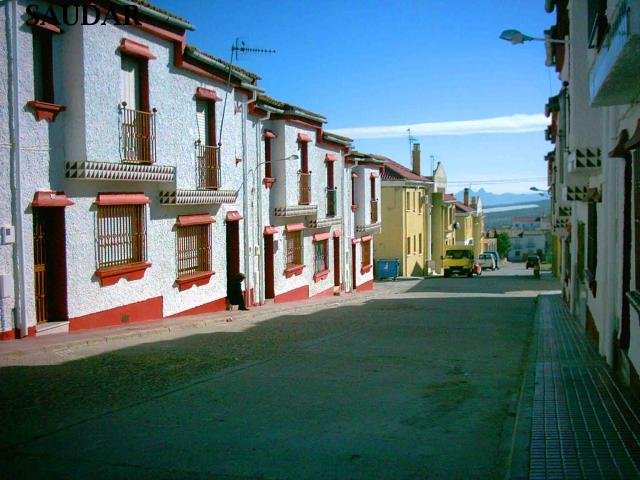

Jódar suffered a strong demographic exodus that occurred in a generalized way since the 50s of the last century, although with a loss of population in successive generations not as important as in the rest of Andalusia or Spain. The analysis of population dynamics in recent years shows that this decline has continued but not as sharply as before, even reaching equilibrium rates that contrast with the positive evolution of the annual average growth rates of the population. of the province of Jaén or of the whole of Andalusia, close to 1%.
From the decade of the 60 of the past century, the municipality reached its maximum population with 14,533 inhabitants. Throughout the following decades, through progressive decreases, we reach a current population stabilized around 12,100 inhabitants.
Our town
Saint Marcos's Cross, Andaráje, Jódar
Jódar, a strategic place in the pass of Eastern Andalucia and Granada towards the plateau, has been a historically very busy place. His citadel controlled this important route, around which the city originated. Therefore, Jódar was growing along the historic road, emerging the posts, taverns and shops to serve the armies and travelers who walked from Castilla to the Kingdom of Granada.
The oldest neighborhood, around the citadel and its castle is called Andaraje, (Andaraxe), which had its apogee around the s. XVI. Afterwards, and due to the tradition of the place, as in other places in Eastern Andalusia, a large part of the population began to occupy the caves in the foothills of the mountain, as it was a more economical and modest way of life, with the emergence of a cave-neighborhood, Vistalegre, which hosted a large population.

The Constitution Neighbourhood, Jódar
Other neighborhoods that emerged much later were Cancion Arroquia and Ejido, in the twentieth century, until then had to go back to the late sixteenth century when Barrionuevo Street was built in Andaraje. The construction of the Barrio de Nuestra Señora de Fátima, arose with the idea of alleviating the problem of the cave dwellings in which thousands of Galdurians lived in subhuman conditions, as well as giving work to the large number of workers, in those difficult years of the postwar period, marked by hunger and social uprooting, with a decadent collision industry and an adverse climate, added more and more penalties, in a population that hovered around the thirteen thousand inhabitants. In just 50 years the city doubled its urban center starting its expansion towards the South, looking for a much less uneven terrain.
In 1954, the new Barrio del Consuelo Menor was added, followed by the "San José" Communal Trust and the "San Relicario Trade Union Building". Subsequently arose the Neighborhoods of the Constitution and South Hope, with its multiple extensions, housing of official protection, as well as a good number of new surrounding streets, schools and facilities of all kinds such as manholes, drainage wells of black water, jamileros a the entrance of the town and its corresponding corrective measures.
It has an area of 19,900 hectares, extends to nine of its sixteen municipalities. The Mágina peak, with 2,167m, is the highest point in the province of Jaén. This special orography results in a richness and diversity of landscape together with other factors such as the representativeness of its ecosystems or the singularity of its flora and fauna, declared in 1989 as Sierra Mágina Natural Park.
With more than 1,290 cataloged plant species that are distributed in floors depending on the altitude, some of them endemic and restricted to this massif. At its summits there are also the world's largest populations of Arenaria alfacarensis, Crepis granatensis and Lithoda nitida. It also has a great wealth of fauna, having cataloged at least 240 species of vertebrates, most of them protected by European, national or regional legislation; Some are in danger of extinction (mountain goat, Iberian lynx, osprey, bittern, common fumeral).
The natural park is ideal for the knowledge of the natural environment and for the practice of low impact sports in contact with nature. It is worth mentioning areas of great ecological interest, such as the sub-desert landscapes and the wetlands of the Pedro Marín reservoir, to the north; and the spartizales.
It has a total area of 663 ha, is located north of Jódar. Integrated by three reservoirs (Pedro Marín, Doña Aldonza and Puente de La Cerrada) and the stretch of river between them, this space was considered a Wetland of International Importance by the Spanish Ornithological Society and the former ICONA. Along the river, this natural space includes developed riparian forests next to extensive formations of marshy vegetation, typical of shallow waters, case of the enea and the reed. Next to the river is the Jódar-Úbeda Railway Station and the constructions that once constituted a population center. One of these buildings, the Flour Factory, is an excellent example of industrial archeology
Local craftsmanship is derived mainly from esparto grass. The esparto is harvested in the mountains extracting the atochas by means of a special hook. Then it is retted, in water, for several days to then crush the espartos to mace, after drying, and thus be prepared fiber for work. With this material bags, mats, tablecloths, burritos, animals, tapestries, lamps, miniatures for objects, firewoods, racks and baskets are manufactured. Of all the equipment made of esparto, beach umbrellas stand out, which fill the tourist areas of the Costa del Sol and Levante even abroad, exporting approximately 3,000 beach umbrellas per year. There are also craft workshops of carpentry and carving, stained glass, macrame, stonework and textile clothing, activities promoted by the Local Autonomous Agency "Villa de Jódar" through occupational training.
Museums
Jodar's Museum
Included in the Ruta de la Cultura del Olivo in Sierra Mágina. This Museum was created in 1997 by the Saudar Cultural Association and the collaboration of the City Council. Since its launch, the Museum had the advice, visits and studies of archeologists of the University College of Jaén and the Provincial Delegation of Culture, respecting at all times the Law of Andalusian Heritage. The pieces, objects and utensils that are exhibited have been donated by the inhabitants of the city, being able to recover in this way infinity of goods relations with the arts and popular customs of the municipality.
The Museum has several rooms: Narciso Mesa Fernández Culture Room for conferences and temporary exhibitions, with the permanent Jódar exhibition through time with photographs from the mid-nineteenth century and the Library of Galdurian Subjects and Authors. Another room dedicated to Jódar through history where the history of the city and the civilizations that populated it are collected. The Hall of Arts and Traditions José María Balboa Ruiz dedicated to gather the tools and equipment of the daily life of early twentieth century with the reconstruction of popular elements of that time and finally Room Craft Esparto Grass, Crafts and Olivar.
The museum is included in the Route of the Olive Culture in Sierra Mágina, with guidance from the Association itself and admission is free.
Birlop Museum
In the House of Culture is the legacy of the Painter Galduriense Blas T. de Rivera y López, with more than a hundred works, in naive art, donated to the city.